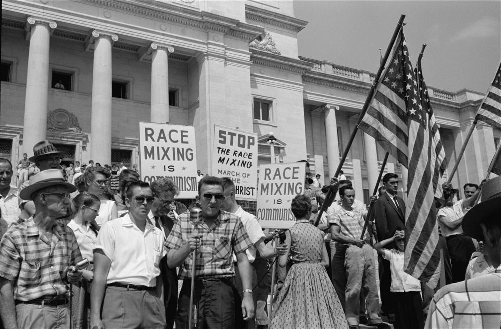
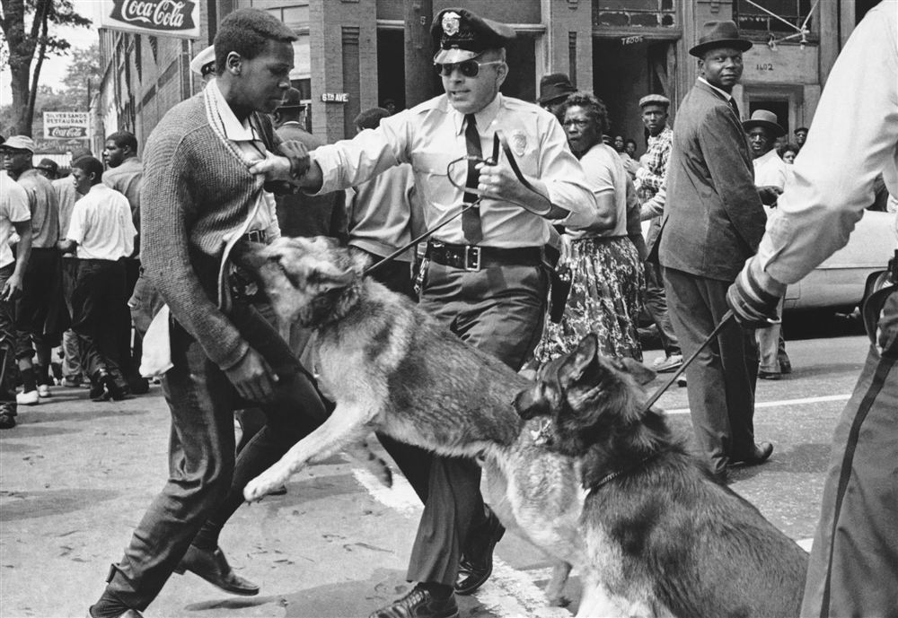
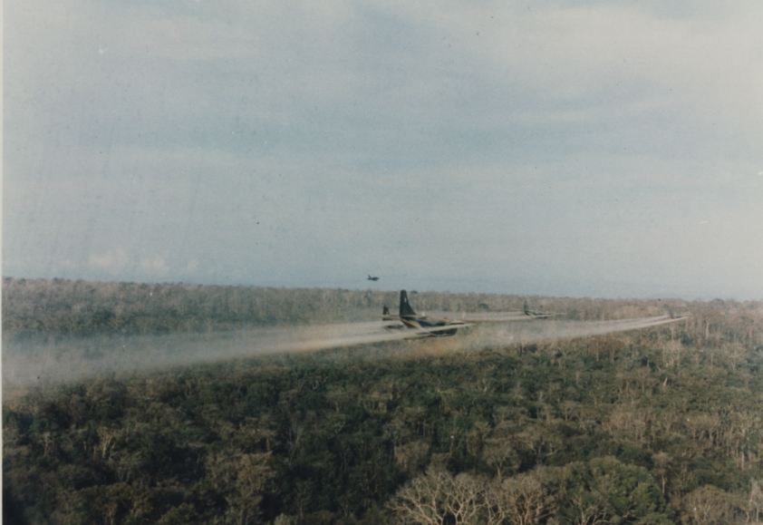

To score full marks on Q3a (8 Marks), structure your response into **two paragraphs** (one for Source B, one for Source C). You must weave together all three corners of the evaluation triangle:
NOPNature/Origin/Purpose
Who wrote it? Why? Is it reliable?
CContent & Quotes
What details can you extract?
OKOwn Knowledge
What context supports this?
Key Topics Checklist
1.1: Early 1950s Position
2.3: Malcolm X Leadership
1.2: Education Progress
2.4: Black Power Movement
1.3: Montgomery Boycott
3.1: Domino Theory
1.4: 1950s Opposition
3.2: Gulf of Tonkin
2.1: Peaceful Protests
3.3: US Military Tactics
2.2: Federal Legislation
3.4: Tet Offensive Turning Point
4.1: Vietnamisation
4.2: Anti-War Movement
4.3: Paris Peace Accords
4.4: Reasons for US Defeat
Key Topic 1.1: Position of Black Americans in the early 1950s
How useful are Sources B and C for an enquiry into the barriers faced by Black Americans in the Southern states in the early 1950s? Explain your answer, using Sources B and C and your own knowledge of the historical context. (8 marks)
Jim Crow laws
Voting literacy tests
NAACP litigation
Economic intimidation
Plessy v. Ferguson
C: What voting obstacles are mentioned? How does the writer describe white applicants' exams?
NOP: A Northern newspaper report from 1954. Why might a Chicago reporter write about Southern segregation?
OK: Link to Jim Crow laws, poll taxes, and literacy tests designed to prevent Black registration.
Source B
From a journalist's dispatch in a Chicago newspaper, reporting on Southern voter registration in 1954.
"Registering to vote in Southern states such as Mississippi and Alabama remains an unattainable goal for African Americans. Local registrars administer arbitrary 'literacy exams' that require Black applicants to interpret intricate constitutional clauses, whereas white applicants face no such hurdles. Furthermore, any Black citizen attempting to register risks immediate dismissal by their employer. Intimidation is omnipresent."
Source C
From a confidential memo by a leading NAACP attorney to the executive board, 1953.
"Our courtroom strategy is yielding significant results. By initiating litigation in the federal courts, we have successfully outlawed the exclusionary white primary system in Texas and are now targeting segregation in higher education. The federal courts are our primary arena, and by leveraging constitutional guarantees, we are compelling the government to recognize that segregation is inherently discriminatory."
C: What legal successes does the attorney report? Where is the NAACP taking their fight?
NOP: A confidential internal NAACP memo. Does the private nature of the memo increase its honesty?
OK: Link to the NAACP legal defense fund, led by Thurgood Marshall, and the Sweatt v. Painter precedent.
Key Topic 1.2: Education progress for Black Americans, 1954–60
How useful are Sources B and C for an enquiry into the Little Rock High School crisis of 1957? Explain your answer, using Sources B and C and your own knowledge of the historical context. (8 marks)
Little Rock Nine
Governor Orval Faubus
101st Airborne Division
Brown v. Topeka (1954)
White Citizens Councils
C: What details show the strength of public opposition? How are the protestors reacting?
NOP: A photograph taken by a press photographer on 4 September 1957. Why would a photograph of this moment be useful?
OK: Link to the Little Rock Nine, Governor Faubus's defiance of the federal court, and the public hostility at Central High School.
Source B (Visual Source)
A photograph showing Elizabeth Eckford (one of the Little Rock Nine) attempting to enter Little Rock Central High School on 4 September 1957.

Source C
From a radio address by President Dwight D. Eisenhower to the American people, 24 September 1957.
"Mob rule in Little Rock cannot be allowed to override the decisions of our courts. The integration of Central High School must proceed as ordered by the federal courts. I have today issued an Executive Order directing the use of federal troops to remove the obstruction and ensure that the law is obeyed. We must show the world that our laws are supreme."
C: What reason does Eisenhower give for sending in soldiers? What does he say about 'mob rule'?
NOP: A televised presidential address. Why was this speech broadcast to the nation? How does his political motive affect reliability?
OK: Link to the deployment of the 101st Airborne Division and federalising the National Guard to protect the students.
Key Topic 1.3: The Montgomery Bus Boycott, 1955–56
How useful are Sources B and C for an enquiry into the methods and impact of the Montgomery Bus Boycott? Explain your answer, using Sources B and C and your own knowledge of the historical context. (8 marks)
Rosa Parks arrest
Montgomery Improvement Assoc. (MIA)
Martin Luther King Jr.
Browder v. Gayle (1956)
Non-violent direct action
C: What methods of alternative transport are suggested? What warning is given about violence?
NOP: An organizing leaflet from the MIA. How does the intent to mobilize the community affect its usefulness?
OK: Link to the coordination of carpools by MLK and the MIA, and the arrest of Rosa Parks.
Source B
From a leaflet distributed by the Montgomery Improvement Association (MIA) to the Black community, December 1955.
"Don't ride the buses on Monday to protest the arrest and trial of Rosa Parks. If you work, take a carpool, ride in a Black-owned taxi, or walk. We must stand united for dignity and justice. Do not use violence under any circumstances. Walk with pride, and let our peaceful absence from the buses speak for us."
Source C
From an editorial in a Montgomery newspaper, December 1956, reflecting on the Supreme Court's desegregation order.
"The Supreme Court decision is a hard blow to our local customs. However, the boycott was not a success of peaceful protest; it was a campaign of economic intimidation that forced local businesses to close. The boycott has destroyed decades of good race relations in Montgomery, leaving behind a bitter town divided by federal court coercion."
C: What is the writer's attitude towards the Supreme Court? How does the editorial describe the boycott's impact?
NOP: A Southern newspaper editorial from 1956. How does the paper's segregationist bias shape its representation of the boycott?
OK: Link this to the Supreme Court ruling in Browder v. Gayle, which declared segregated buses unconstitutional.
Key Topic 1.4: Opposition to the civil rights movement, 1954–60
How useful are Sources B and C for an enquiry into the methods of opposition to the civil rights movement in the late 1950s? Explain your answer, using Sources B and C and your own knowledge of the historical context. (8 marks)
Southern Manifesto (1956)
White Citizens Councils
Massive Resistance
Economic retaliation
KKK intimidation
C: What is the main accusation against the Supreme Court? What do they pledge to do?
NOP: An official manifesto signed by 101 Southern congressmen. Why is this useful for understanding political resistance?
OK: Link to the policy of 'Massive Resistance' and how Southern states closures circumvented Brown.
Source B
From the 'Southern Manifesto' (Declaration of Constitutional Principles) signed by 101 Southern members of Congress in March 1956.
"We regard the decision of the Supreme Court in the school cases as a clear abuse of judicial power. It climaxes a trend in the Federal judiciary to legislate, in derogation of the authority of Congress, and to encroach upon the reserved rights of the States and the people. We pledge ourselves to use all lawful means to bring about a reversal of this decision which is contrary to the Constitution and to prevent the use of force in its implementation."
Source C
From a speech by a leader of the Montgomery White Citizens Council in Alabama, speaking to a segregationist rally in 1956.
"The Negroes think that a court ruling can force us to integrate. But we hold the economic power in this town. If they continue to demand integration, they will find themselves without jobs, without credit at our banks, and without homes. We will organize economic boycotts against any business that surrenders, and we will use every social pressure to protect our segregated Southern way of life."
C: What economic sanctions are threatened? How do they plan to pressure local businesses?
NOP: A speech at a public segregationist rally. How does the speaker's tone and audience affect reliability?
OK: Link to the rapid growth of White Citizens Councils in the 1950s, using economic coercion to ruin Black activists financially.
Key Topic 2.1: Peaceful protests in the early 1960s
How useful are Sources B and C for an enquiry into the Birmingham Campaign of 1963? Explain your answer, using Sources B and C and your own knowledge of the historical context. (8 marks)
Project C (Confrontation)
Police Chief Bull Connor
Children's Crusade
Letter from Birmingham Jail
Media coverage impact
C: What details show the police methods used? How does this photograph capture the scale of tension?
NOP: A photograph published in national newspapers in May 1963. Why would publication in national newspapers affect its utility?
OK: Link to SCLC's Birmingham Campaign, Project C, Police Chief Bull Connor, and the use of children/teenagers in protests.
Source B (Visual Source)
A photograph showing the police department using attack dogs against young protestors in Birmingham, Alabama, May 1963.

Source C
From a statement by Albert Boutwell, the newly elected moderate mayor of Birmingham, May 1963.
"These outside agitators have flooded our city at a time when we were moving towards resolving our local problems peacefully. Their protests are illegal, dangerous, and have caused unnecessary disorder in our streets. They have exploited children, placing them in the front lines of protests, solely to create sensationalist headlines for the national media."
C: What does he accuse the protesters of doing? How does he describe the impact on the streets?
NOP: A statement by the Birmingham Mayor. How does his position as city leader shape his view of the activists?
OK: Link to the 'Children's Crusade' where the SCLC used school children as protestors, resulting in Connor using water cannons and dogs.
Key Topic 2.2: Federal civil rights legislation, 1963–65
How useful are Sources B and C for an enquiry into the passage of the Voting Rights Act of 1965? Explain your answer, using Sources B and C and your own knowledge of the historical context. (8 marks)
Selma campaign (1965)
Bloody Sunday
President Lyndon B. Johnson
Voting Rights Act of 1965
Civil Rights Act of 1964
C: How does Johnson describe the events at Selma? What does he say about the right to vote?
NOP: An address to Congress by the President. How does the public, legislative nature of the speech affect its usefulness?
OK: Link to the Selma to Montgomery marches and 'Bloody Sunday' where state troopers attacked peaceful protestors.
Source B
From President Lyndon B. Johnson's address to a joint session of Congress, introducing the Voting Rights Bill, 15 March 1965.
"At Selma, Alabama, long-suffering men and women have campaigned peacefully for the right to register as voters. They have been met by police violence and state-sanctioned resistance. Every American citizen must have an equal right to vote. There is no constitutional issue here; it is a moral issue. We shall overcome the legacy of bigotry and deny no one their constitutional rights."
Source C
From a student civil rights worker's diary in Selma, Alabama, describing voting registration hurdles, January 1965.
"We went to the courthouse again today. Only 15 Black people were allowed to stand in line, and the registrar worked at a snail's pace. Sheriff Clark stood by, clutching his cattle prod, looking for any reason to arrest us. After five hours in the cold, the registrar declared the office closed. Only two people managed to submit their forms, and they will likely be rejected."
C: What specific tactics were used to prevent Black citizens from registering? How is Clark described?
NOP: A student volunteer's diary. Does the private, daily nature of a diary make it more useful for understanding personal experience?
OK: Link to Sheriff Jim Clark's notorious violence in Selma, which was highlighted by SNCC and SCLC for national media.
Key Topic 2.3: Malcolm X and civil rights leadership
How useful are Sources B and C for an enquiry into the methods and impact of Malcolm X? Explain your answer, using Sources B and C and your own knowledge of the historical context. (8 marks)
Nation of Islam
Self-defense doctrine
Black Nationalism
"Ballot or the Bullet"
Split in activist strategies
C: How does the speaker view the 'American dream'? What choice does he present?
NOP: A speech delivered to a Black audience in 1964. What is the speaker's main purpose? Does the militant language limit usefulness?
OK: Link to Malcolm X's split from the Nation of Islam and his growing focus on political action and armed self-defense.
Source B
From Malcolm X's "The Ballot or the Bullet" speech, delivered in Cleveland, Ohio, 3 April 1964.
"We don't see any American dream; we've only experienced the American nightmare. If the government refuses to protect our constitutional rights, we must defend ourselves. We are within our rights to use any means necessary. It must be the ballot or the bullet. If we cannot vote peacefully, then we must be prepared for armed self-defense."
Source C
From an article by Martin Luther King Jr., published in a national magazine, January 1965.
"Malcolm X's advocacy of violence and separation is deeply dangerous. It plays into the hands of segregationists who want to paint us as extremists. We cannot achieve integration or equality by arming ourselves or withdrawing from white society. Our strength lies in our moral power and our ability to win over the conscience of the nation through nonviolent suffering."
C: Why does King think Malcolm X's ideas are dangerous? How does he define the movement's strength?
NOP: A magazine article by MLK. How does King's audience and goal shape his critique?
OK: Link to the ideological division between MLK's integrationist non-violence and Malcolm X's Black Nationalist separatism.
Key Topic 2.4: The Black Power movement, 1965–75
How useful are Sources B and C for an enquiry into the goals and methods of the Black Panther Party? Explain your answer, using Sources B and C and your own knowledge of the historical context. (8 marks)
Ten-Point Program
Huey Newton & Bobby Seale
Armed patrols (self-defense)
Community programs (breakfast)
FBI surveillance (COINTELPRO)
C: What are their primary demands? What is their attitude towards capitalists and police?
NOP: The official founding platform of the Panthers. Why is this useful for understanding their official goals?
OK: Link to the founding of the Black Panther Party in Oakland by Huey Newton and Bobby Seale in response to urban ghetto conditions.
Source B
From the Black Panther Party's Ten-Point Program (What We Want, What We Believe), October 1966.
"1. We want freedom. We want power to determine the destiny of our Black Community. 3. We want an end to the robbery by the capitalists of our Black community. 7. We want an immediate end to police brutality and murder of Black people. 10. We want land, bread, housing, education, clothing, justice, and peace."
Source C
From an official report by the FBI Director to a US Senate Subcommittee, investigating extremist groups, 1969.
"The Black Panther Party is the greatest threat to the internal security of the country. They recruit young criminals and arm them under the guise of 'self-defense'. They teach hatred of white people and local law enforcement, actively encouraging violence against police officers. Their community programs are merely front operations designed to gain public sympathy."
C: What does the report accuse the Panthers of doing? How does it view their breakfast programs?
NOP: An official government intelligence report. How does the FBI's hostile stance shape its portrayal of the Panthers?
OK: Link to J. Edgar Hoover, the FBI's COINTELPRO program, and their covert campaign to dismantle Black Power groups.
Key Topic 3.1: US involvement in Vietnam & the Domino Theory
How useful are Sources B and C for an enquiry into the reasons for US involvement in Vietnam in the 1950s? Explain your answer, using Sources B and C and your own knowledge of the historical context. (8 marks)
Domino Theory
Battle of Dien Bien Phu
Ho Chi Minh nationalism
President Dwight D. Eisenhower
Containment policy
C: What is the 'domino' analogy? Which countries does the president fear will fall next?
NOP: An internal government memo from the President. How does the secret, strategic nature of this memo affect usefulness?
OK: Link this to the 'containment' doctrine and the Truman Doctrine's promise to assist free peoples resisting communism.
Source B
From a memorandum by President Eisenhower to the State Department explaining the "Domino Theory", April 1954.
"If Indochina falls to the communists, the rest of Southeast Asia will follow quickly like a row of dominos. The loss of Indochina would threaten Burma, Thailand, and Malaya, placing millions more under communist control. It would also compromise the security of Japan and the Philippines. We must prevent this first block from falling to protect our interests."
Source C
From an open letter by Ho Chi Minh to the United Nations, protesting foreign intervention in Vietnam, November 1954.
"For eighty years, the French imperialists have oppressed our people. We have fought a long and bloody war solely to achieve our national independence and unify our homeland. The United States is now supplying weapons and advisers to establish a puppet regime in the South, denying our people their right to self-determination. We only desire peace and freedom."
C: What reason does Ho Chi Minh give for their struggle? What accusation does he make against the US?
NOP: An open letter to the UN by Ho Chi Minh. Why did he appeal to the UN? How does the goal of global support affect usefulness?
OK: Link to the defeat of the French at Dien Bien Phu and the division of Vietnam at the Geneva Conference in 1954.
Key Topic 3.2: The Gulf of Tonkin incident and escalation
How useful are Sources B and C for an enquiry into the escalation of the Vietnam War following the Gulf of Tonkin incident (1964)? Explain your answer, using Sources B and C and your own knowledge of the historical context. (8 marks)
USS Maddox incident
Gulf of Tonkin Resolution
President Lyndon B. Johnson
Escalation (troop deployment)
US Senate vote
C: What event is cited as the reason for the resolution? What powers are granted to the President?
NOP: A joint resolution passed by Congress. What makes this a highly useful legal source? How does the belief in attacks affect reliability?
OK: Link to the reported attack on the USS Maddox in August 1964 and how Johnson escalated troops without a war declaration.
Source B
From the Gulf of Tonkin Resolution, passed by the United States Congress, 7 August 1964.
"Whereas naval vessels of the communist regime in Vietnam have repeatedly and aggressively attacked United States vessels in international waters... Resolved, that the Congress approves and supports the determination of the President, as Commander in Chief, to take all necessary measures to repel any armed attack against the forces of the United States and to prevent further aggression."
Source C
From a North Vietnamese government official statement broadcast on Hanoi Radio, 6 August 1964.
"The US government has fabricated the story of a second attack on its warships on August 4. This is a blatant pretext designed to justify their air raids against our coastal defenses and escalate their imperialist war in Vietnam. US warships deliberately intruded into our territorial waters to provoke our forces, violating international law."
C: What does the speaker accuse the US of doing on August 4? What reason does Hanoi give for US movements?
NOP: A radio broadcast from a communist state. How does the propaganda purpose of state radio affect reliability?
OK: Link to subsequent historical findings that the second attack on August 4 did not actually take place, confirming Hanoi's claim.
Key Topic 3.3: US military tactics in the Vietnam War
How useful are Sources B and C for an enquiry into the effectiveness of US military tactics in Vietnam? Explain your answer, using Sources B and C and your own knowledge of the historical context. (8 marks)
Search and Destroy
Chemical defoliants (Agent Orange)
Vietcong guerrilla tactics
Body count metric
Hearts and Minds failure
C: What tactics are shown? How does the size of the spray compare to the jungle canopy?
NOP: A photograph taken by a military photographer in 1968. How does the military origin of the photo affect reliability?
OK: Link to Operation Ranch Hand, defoliation tactics (Agent Orange), and the environmental and human impact.
Source B (Visual Source)
A photograph showing US Air Force UC-123 planes spraying chemical defoliants (Agent Orange) over the jungle canopy in South Vietnam, 1968.

Source C
From an interview with a Vietcong veteran, recalling the impact of US Search and Destroy missions, recorded in 1971.
"Whenever the American helicopters arrived, we simply withdrew into our underground tunnel systems. When they left, we re-emerged to lay booby traps and ambush their patrols. Their search-and-destroy missions never held any territory. They came, burned our huts, killed our livestock, and left. This only made our anger grow and strengthened our resolve to fight."
C: How did the Vietcong survive attacks? Why does he claim search-and-destroy failed to hold territory?
NOP: Interview with a Vietcong veteran. How does pride in fighting and victory shape the reliability?
OK: Link to Vietcong guerrilla tactics (punji traps, bouncing bettys, tunnels of Cu Chi) and how search-and-destroy alienated civilians.
Key Topic 3.4: The Tet Offensive as a turning point
How useful are Sources B and C for an enquiry into the impact of the Tet Offensive (1968) on the US war effort? Explain your answer, using Sources B and C and your own knowledge of the historical context. (8 marks)
Tet Offensive (Jan 1968)
Walter Cronkite broadcast
Credibility gap
Military vs political victory
President Johnson's decision
C: Why does the author believe the war will end in a stalemate? What does he recommend?
NOP: A television broadcast by CBS anchor Walter Cronkite. Why is this politically useful?
OK: Link to the 'credibility gap' and President Johnson's reaction (*"If I've lost Cronkite, I've lost Middle America"*).
Source B
From a televised news report by Walter Cronkite, CBS News anchor, broadcast on national television, 27 February 1968.
"To say that we are closer to victory today is to believe, in the face of the evidence, the optimists who have been wrong in the past. It seems now more certain than ever that the bloody experience of Vietnam is to end in a stalemate. The only rational way out will be to negotiate, not as victors, but as an honorable people who lived up to their pledge."
Source C
From an internal assessment report by General Westmoreland, US Military Commander in Vietnam, sent to the Joint Chiefs of Staff, March 1968.
"The enemy's Tet Offensive has ended in a complete military defeat for their forces. The Vietcong suffered catastrophic casualties, losing over 45,000 experienced combatants, and failed to spark a popular uprising. Their infrastructure in the South is shattered. We must now launch a counter-offensive to destroy the remaining pockets of resistance."
C: What evidence is used to claim military victory? What next step does he propose?
NOP: An internal military report by the commanding general. How does military defense shape reliability?
OK: Link to the military reality that the VC were decimated during Tet, but it was a massive political defeat for the US.
Key Topic 4.1: Vietnamisation and Nixon's policy, 1969–73
How useful are Sources B and C for an enquiry into the success of Nixon's policy of Vietnamisation? Explain your answer, using Sources B and C and your own knowledge of the historical context. (8 marks)
Nixon Doctrine
ARVN (South Vietnamese Army)
US troop withdrawals
Invasion of Cambodia (1970)
Peace with Honour
C: What is the core definition of Vietnamisation? How many troops does he claim to have withdrawn?
NOP: A televised presidential address. How does the political need to satisfy a war-weary US electorate affect reliability?
OK: Link to the 'Nixon Doctrine' and the domestic pressure of the anti-war movement forcing troop withdrawals.
Source B
From President Richard Nixon's televised address to the nation, announcing troop withdrawals, November 1969.
"Under our plan of Vietnamisation, we are systematically training and equipping the South Vietnamese forces to take over full responsibility for defending their own country. This allows us to withdraw American combat troops while maintaining our commitments. We have already withdrawn 60,000 men. This policy offers the only path to a lasting peace with honor."
Source C
From a report by a US military adviser in Saigon, sent to the Defense Department, 1971.
"The ARVN forces remain heavily dependent on US air support. Morale is extremely low, and desertion rates have reached record highs. Many units are led by corrupt officers who pocket supplies instead of distributing them. When faced with North Vietnamese attacks in Laos, ARVN troops panicked and suffered massive casualties, proving they cannot fight alone."
C: What key problems are identified in the ARVN? How did they perform in combat in Laos?
NOP: An internal military report. Does the confidential nature of military-to-government reports make it more reliable?
OK: Link to the failure of the ARVN's invasion of Laos (Operation Lam Son 719) in 1971, which exposed their weakness.
Key Topic 4.2: The anti-war movement in the USA
How useful are Sources B and C for an enquiry into the impact and opposition to the anti-war movement? Explain your answer, using Sources B and C and your own knowledge of the historical context. (8 marks)
Kent State shootings (1970)
Draft card burning
Students for a Democratic Society (SDS)
Silent Majority
Spiro Agnew criticism
C: What elements represent the draft process? How is the lottery system depicted?
NOP: A photograph showing the draft lottery operation in 1970. Why is this photograph useful for understanding domestic impact?
OK: Link to the Vietnam draft lottery system, student deferments ending, campus protests, and opposition to the Cambodia invasion.
Source B (Visual Source)
A photograph showing the selection of draft numbers during the first Vietnam War draft lottery in Washington D.C., December 1969.
Source C
From a speech by US Vice President Spiro Agnew, delivered to a Republican rally in Ohio, May 1970.
"We cannot allow our national foreign policy to be dictated by a vocal minority of radical students who burn draft cards and wave communist flags. They are not heroes; they are parasites who exploit the freedoms of our universities to sow division. The silent majority of patriotic Americans support our president in his search for an honorable peace."
C: How does Agnew characterize student protesters? Who does he claim supports the president?
NOP: A political rally speech by the Vice President. How does the goal of rallying political supporters affect usefulness?
OK: Link to Nixon's concept of the 'Silent Majority'—the millions of middle-class Americans who did not protest.
Key Topic 4.3: The Paris Peace Accords, 1973
How useful are Sources B and C for an enquiry into the negotiations and impact of the Paris Peace Accords? Explain your answer, using Sources B and C and your own knowledge of the historical context. (8 marks)
Cease-fire agreement
Henry Kissinger negotiations
President Nguyen Van Thieu
US military withdrawal
North Vietnamese troops in South
C: What are the ceasefire terms and US troop withdrawal timelines?
NOP: The official international peace treaty. What makes this treaty text highly useful for understanding formal terms?
OK: Link to Henry Kissinger's negotiations with North Vietnam's Le Duc Tho in Paris.
Source B
From the official text of the Paris Peace Agreement, signed by the US, South Vietnam, and North Vietnam, 27 January 1973.
"Article 2: A cease-fire shall be observed throughout South Vietnam... Article 5: Within sixty days of the signing of this Agreement, there shall be a total withdrawal from South Vietnam of all troops, military advisers, and military personnel... of the United States. Article 15: The reunification of Vietnam shall be carried out step by step through peaceful means."
Source C
From a personal letter written by President Nguyen Van Thieu of South Vietnam to President Nixon, expressing concerns about the treaty draft, December 1972.
"This agreement is a death warrant for South Vietnam. It requires the total withdrawal of all American military support, yet it allows over 150,000 North Vietnamese troops to remain stationed inside our borders. How can we defend ourselves? Without your guarantee of military intervention if they violate the cease-fire, Saigon will be lost."
C: Why does Thieu call the treaty a 'death warrant'? What does he say about North Vietnamese troops?
NOP: A private letter from President Thieu. Does the private nature of the letter make it more useful for understanding Thieu's true fears?
OK: Link to South Vietnam's reluctant signing of the Accords after Nixon promised to 'respond with full force' if North Vietnam violated the treaty.
Key Topic 4.4: Reasons for US defeat in Vietnam
How useful are Sources B and C for an enquiry into the failure of the USA in Vietnam? Explain your answer, using Sources B and C and your own knowledge of the failure of the USA in Vietnam. (8 marks)
Military failures
Hearts and minds failure
Domestic political pressure
Ho Chi Minh trail resolve
Guerrilla tactical flexibility
C: What political and tactical constraints are blamed? How does he describe enemy resolve?
NOP: A US officer's memoir published in 1980. How does his desire to justify a military defeat shape usefulness?
OK: Link to the Ho Chi Minh trail passing through Laos and Cambodia, which US ground forces were forbidden to invade.
Source B
From a memoir by a former US infantry officer reflecting on the failure of search and destroy, published in 1980.
"We were never defeated in a major battle, yet we lost the war. We were hamstrung by political restrictions that prevented us from invading North Vietnam. Our search-and-destroy tactics were useless against an enemy that could retreat into Laos and Cambodia. We were fighting a war of attrition where the enemy was willing to take ten casualties for every one of ours, and our own public at home wouldn't tolerate the body counts."
Source C
From a memoir by a former Vietcong organizer reflecting on why they won the war, published in 1982.
"The Americans relied on technology, bombs, and chemical defoliants, but they never understood that this war was a fight for our national survival. Every bomb they dropped only strengthened our determination to drive out the foreign invaders. We were willing to fight for twenty, fifty, or a hundred years. Our strength did not come from weapons; it came from the support of the peasants who hid us, fed us, and rebuilt our trails."
C: What was the true source of Vietcong strength? What did the US fail to understand?
NOP: A memoir by a victorious Vietcong organizer. How does the pride in winning shape reliability?
OK: Link to the Ho Chi Minh Trail maintenance by thousands of volunteers, and failure of US forces to secure the 'Hearts and Minds'.